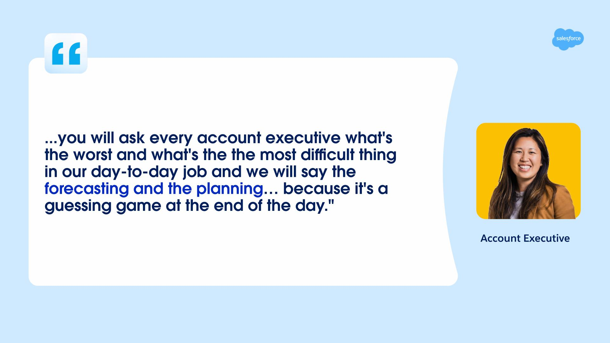
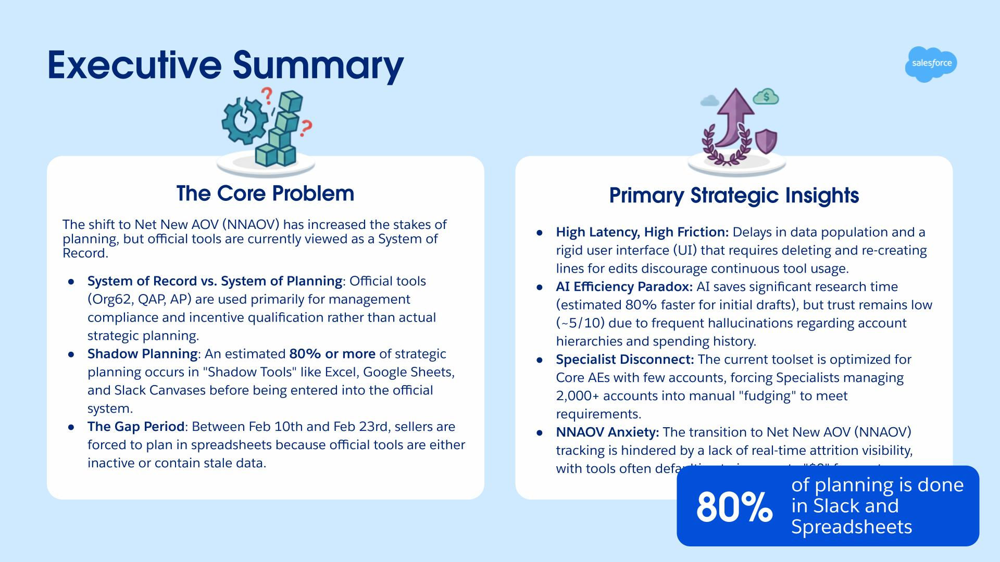
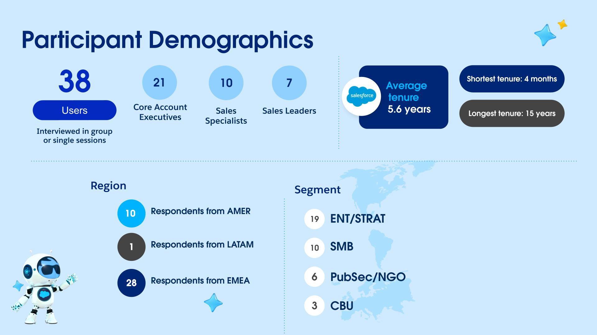

The Problem
Account Plans and QAPs are critical tools for sellers. They use them every day. But nobody on the team actually understood how they worked or where sellers got stuck.
The March QAP cycle was approaching. Nobody had flagged this gap. Nobody owned it. And if we didn't understand seller behavior, we'd be guessing on the FY27 roadmap.
I spotted the gap. I spotted the deadline. And I built a research plan from scratch to answer the questions nobody was asking.

Global research coordination across three continents and time zones, targeting sellers at every level—from individual contributors to sales leaders.
What Sellers Told Us

Planning felt like a guessing game. That one quote said everything. Sellers weren't thinking strategically. They were filling out forms they had to fill out and hoping their numbers made sense.
What I Built
I built the whole research initiative from scratch. Designed the study. Recruited 38 sellers across three continents. Coordinated the sessions. Translated the findings. Got them to the right people in time.

Three key insights emerged. Planning isn't in the planning tools. Most of it happens in spreadsheets and emails. And there's a massive lag between when data's available and when sellers can actually use it. That gap forces them to work around the system.

Final cohort: 38 sellers from three continents. Account Executives. Specialists. Leaders. An average of 5.6 years at Salesforce. Real perspectives across real roles.